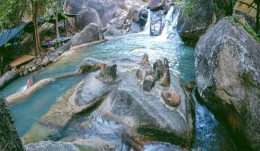
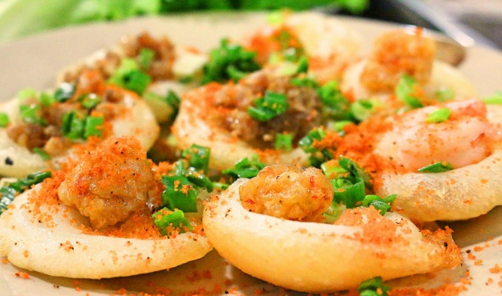
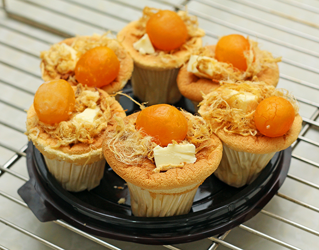
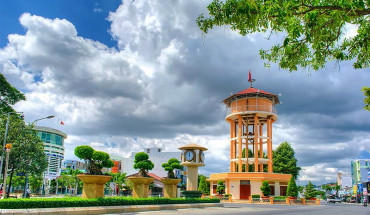
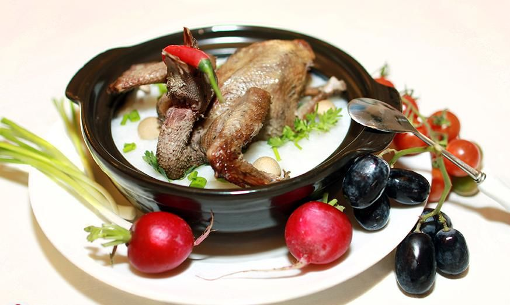
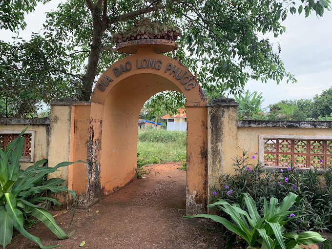

Place
Suối Đá ở Bà Rịa - điểm đến mát rượi cho ngày nắng
Nếu bạn dự định leo núi, ngắm cảnh nhưng lại ngại đi xa với những ngọn
núi cao và hiểm trở, bạn nên thử sức với Suối Đá - núi Dinh tại Chu
Hải, Bà Rịa - Vũng Tàu.

Food
Ăn hoài vẫn nghiền với món bánh Khọt Vũng Tàu ngon trứ danh
Khi nhắc đến Vũng Tàu, ngoài những danh lam thắng cảnh nổi tiếng thì
ẩm thực nơi đây cũng 'không phải dạng vừa'. Và nơi đây có một món ăn
trứ danh gần xa ai cũng biết đó chính là bánh Khọt Vũng Tàu. Món ăn đã
đi vào lòng mỗi người con xứ biển cũng như những người lữ khách phương
xa với hương vị thơm ngon.

Food
BÁNH BÔNG LAN TRỨNG MUỐI - ĐẶC SẢN NỨC TIẾNG VŨNG TÀU
Vũng Tàu là một miền biển đẹp thơ mộng. Vẻ đẹp đó đã “quyến rũ” biết
bao bước chân đam mê khám phá - du lịch. Vũng Tàu không những sở hữu
những bờ biển đẹp, những bến cảng sầm uất nhưng không kém phần lãng
mạn mà còn có một nền ẩm thực đặc sắc. Các đặc sản Vũng Tàu luôn khiến
người ta ăn một lần và nhớ cả đời như lẩu súng, tiết canh tôm, cua mặt
trăng, bánh hỏi… Bánh bông lan trứng muối cũng là một trong những đặc
sản của xứ Vũng Tàu khiến du khách “ngẩn ngơ” bởi hương vị thơm ngon
khó cưỡng của nó.

Place
Nhà Tròn - Di tích lịch sử trăm tuổi ở thành phố Bà Rịa
Du khách đến tham quan Vũng Tàu thường luôn muốn tìm đến những bãi
biển để thỏa mình bơi lội trong làn nước trong xanh. Nhưng nếu bạn là
một người yêu thích chụp ảnh và tìm hiểu điểm thú vị từ các địa danh
xưa. Bạn không nên bỏ qua Nhà Tròn Bà Rịa khi đi du lịch đến Vũng Tàu.
Cùng mình tìm hiểu về Nhà Tròn Bà Rịa trong bài viết dưới đây nhé

Food
'Ăn ngon hết sẩy' với món cháo bồ câu Vũng Tàu bổ dưỡng
Nếu bạn có cơ hội du lịch thành phố biển Vũng Tàu xinh đẹp thì hãy nhớ
thưởng thức những món ăn đặc sản cháo bồ câu nhé! Hương vị của tô cháo
chắc chắn sẽ khiến bạn cảm thấy nhớ mãi sau lần đầu thưởng thức. Hãy
cùng Halo tìm hiểu về món cháo bồ câu Vũng Tàu này nhé!

Place
Địa đạo Long Phước - Di tích lịch sử đáng tự hào của thành phố Bà
Rịa
Di tích địa đạo Long Phước cách trung tâm thành phố Bà Rịa khoảng 7
km. Đây là công trình sáng tạo, một chứng tích hào hùng của quân và
dân ta trong suốt hai cuộc kháng chiến chống thực…